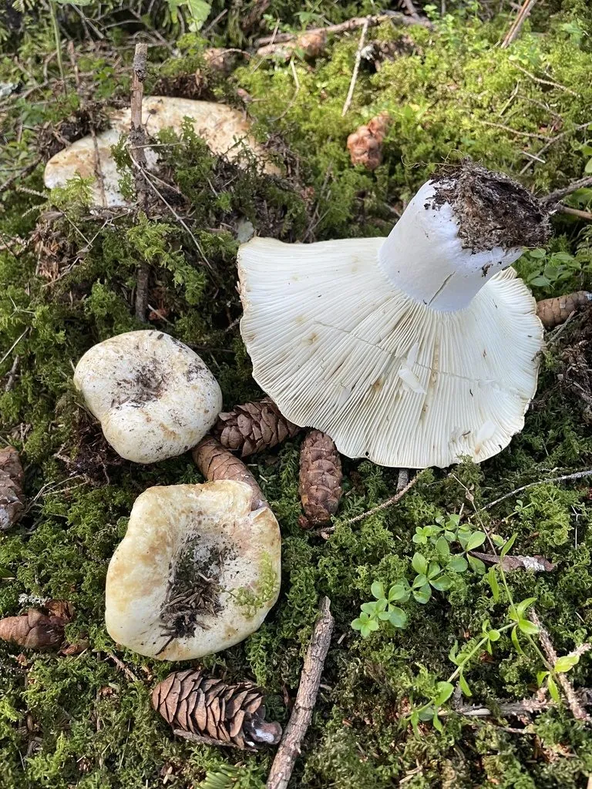

真菌 · 真菌界
大白菇 Russula delica

红菇科大型食用菌类，菌盖白色、中央下凹呈漏斗状，菌肉厚实，夏秋生于阔叶林地上，须煮熟食用。
- 分类
- 门担子菌门纲伞菌纲目红菇目科红菇科属红菇属
- 栖息环境
- 阔叶林与混交林地上，与栎、松等形成外生菌根
- 地理分布
- 北半球温带至亚热带林地分布，中国南北各地及欧洲、北美有记录
- 保护级别
- 暂无评估；种群较稳定
物种志
大白菇的菌盖直径 8–20 厘米，初期凸起，后平展并深凹成漏斗状，表面白色至乳白，常带土黄或锈色斑，光滑无光泽，边缘内卷。菌肉白色，厚实坚硬。菌褶白色至淡乳黄，密集，直生至延生。菌柄短粗，长 2–5 厘米，直径 2–4 厘米，白色，质地坚硬。孢子印白色至淡乳黄。
大白菇生于阔叶林或针阔混交林地上，与栎、松等树木形成外生菌根，夏秋 7–10 月发生，常半埋于落叶层中。它个体大、菌肉厚，是红菇属中产量较高的食用种，可切片炒食或炖汤，但必须煮熟，且部分人食用后可能出现轻微胃肠不适。采食时需与有毒的白色鹅膏菌严格区分：后者菌柄上有菌环、基部有菌托，菌褶离生；大白菇则无菌环菌托、菌褶直生，且菌肉脆如粉笔。
形态与习性
- 菌盖直径 8–20 厘米，白色，深凹成漏斗状
- 菌柄短粗，长 2–5 厘米，质地坚硬
- 孢子印白色至淡乳黄，孢子具小疣
- 生境阔叶林地上，常半埋于落叶层，夏秋发生
- 食用性菌肉厚实，须煮熟，部分人食后不适
- 易混淆与白色鹅膏菌区分：后者有菌环菌托、菌褶离生
趣味知识
- 大白菇可以长到 20 厘米，是红菇属中的“巨无霸”，常把落叶层顶起一个包。
- 它菌肉硬脆、掰开像粉笔，而白色鹅膏菌的菌肉更松软、菌柄带菌环。
- 大白菇菌褶直生、无菌环菌托，这三点是与致命白色鹅膏菌的关键区别。
- 它常半埋土中，采挖时要用小刀从基部切下，避免把泥土带进菌褶。